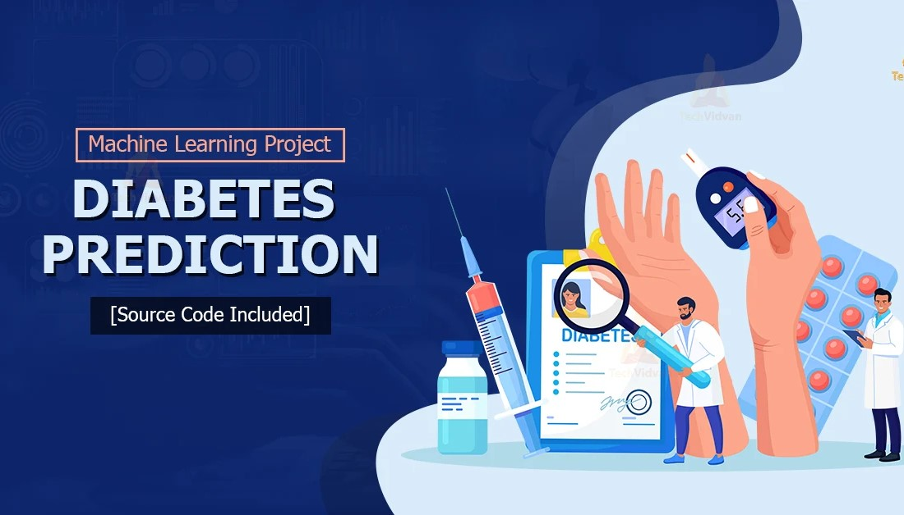
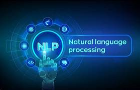

About Me
I am a data science enthusiast currently pursuing my studies at IIIT Una, with a CGPA of 8.64. I completed my 10th and 12th grades at G.S.A.S Academy Harraiya Basti. I have a deep interest in working with data and solving problems through programming. My skills include data analysis, visualization, and machine learning, and I enjoy tackling complex challenges to derive meaningful insights from large datasets.
In addition to my academic studies, I spend a lot of time honing my programming skills through competitive coding on platforms like LeetCode and CodeChef. I enjoy solving algorithmic problems and testing my skills in coding competitions. My work mainly involves building end-to-end data science projects, where I collect data, analyze it, and help solve real-world problems using data-driven insights.
When I am not working on my academic projects or competitive coding, I enjoy learning new concepts and techniques related to data science. I am always eager to improve my skills and stay updated with the latest trends in the field.

A clone of usabilityHub to learn HTML,CSS. It was my first project where I became familiar with different type of tags , different styling techniques , deployment on gitHub pages .
This is how I started learning Machine-Learning and learnt all basic concepsts of data preprocessing , visualisation-tools and basic classification and regression models and did some practice.

This project focuses on predicting the likelihood of diabetes using machine learning techniques. This was my first ML end to end project where i learnt flask basics and model deployment.

Here I learnt all the basic concepts like - word-embedding , feature-extraction , text-preprocessing and deep learning techniques like-RNN , LSTM of NLP and did some practice.

Sentiment analysis project on movie reviews uses an LSTM model to classify the sentiment of reviews as positive and negative with 86% accuracy and Also explored Vander Library.
built a chatBot using dialogflow . Here I learnt Dialogflow intents, Entities, etc and learnt how to integrate dialogflow with flask, web tunneling using ngrok.

Learnt Web Scrapping and Build a dataset and extract internship data from Internshala using BeautifulSoup.

building a website agroAssist which uses flask as backend and frontend using HTML,CSS,Js,Bootstrap.